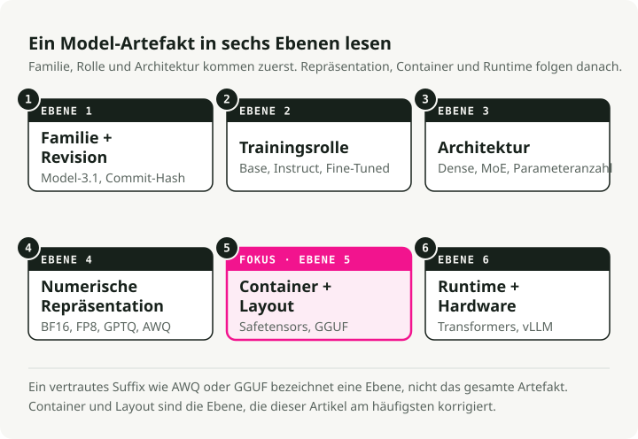
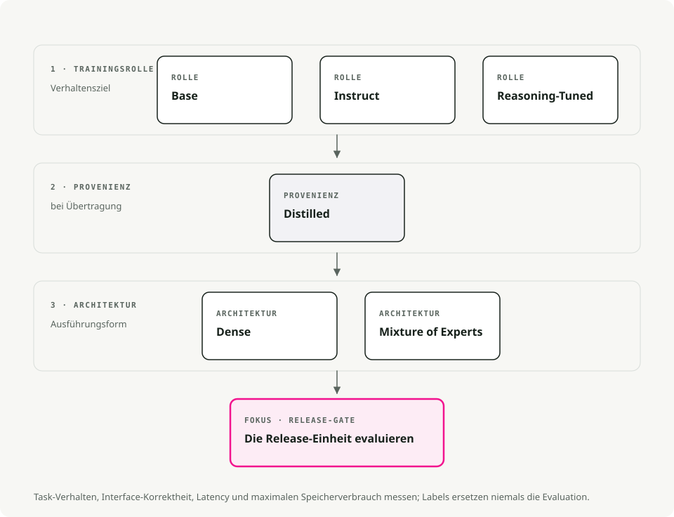
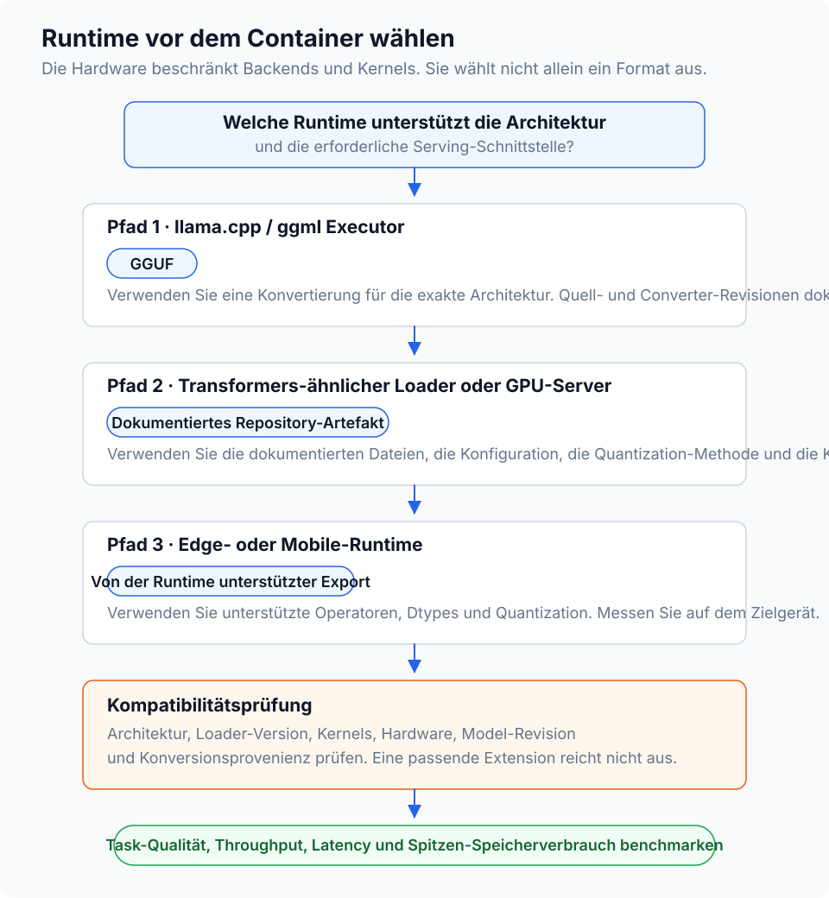
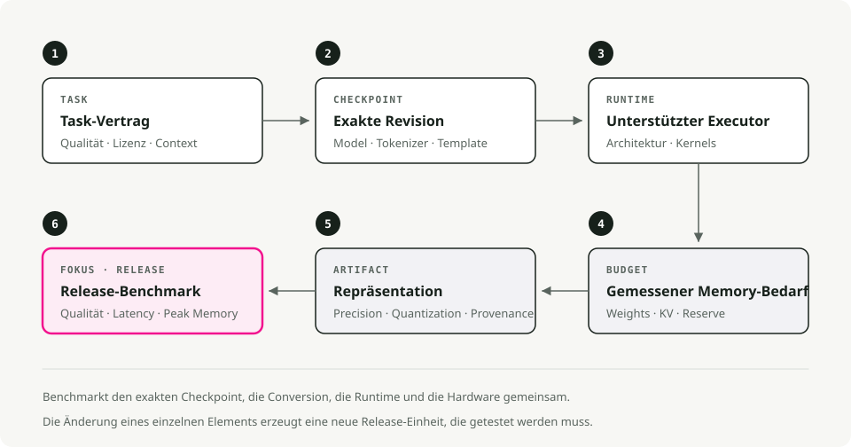

Automatische Übersetzung
Dieser Artikel wurde automatisch aus der englischen Originalversion übersetzt.
Open-Source-LLM-Varianten und Dateiformate: Instruct, GGUF, GPTQ, AWQ und MoE
Warum haben Open-Source-LLMs so viele verwirrende Namen?
Sie sind vermutlich bereits auf Namen wie diese gestoßen Llama-3.1-8B-Instruct.Q4_K_M.gguf oder Mistral-7B-v0.3-A3B.awq Und man fragt sich, wofür die Suffixe dienen. Sie wirken störend, doch sie geben eigentlich gleichzeitig zwei unterschiedliche Informationen preis.
Open-Source-LLMs unterscheiden sich entlang zweier unabhängiger Dimensionen:
- Modellvariante: der Suffix im Namen (
-Instruct,-Distill,-A3B) beschreibt, wie das Modell trainiert wurde und wofür es optimiert ist. - Dateiformat: die Endung (
.gguf,.gptq,.awq) beschreibt, wie die Gewichte gespeichert werden und wo sie am besten ausgeführt werden können (CPU, GPU, Mobilgeräte).
Die Variante bestimmt, was das Modell leisten kann. Das Format bestimmt hingegen, wo es effizient laufen kann.

Verwirren Sie diese beiden Aspekte, und Sie werden den Abend damit verbringen, Fehler im CUDA-Framework bei einem Modell zu beheben – obwohl dieses von vornherein niemals auf Ihre Grafikkarte passen wird.
Erklärung der Modellvarianten (das Konzept)
Die Variante gibt an, welche Art von Training die Gewichte durchlaufen haben.
Basismodelle
Das rohe, vorgetrainierte Modell. Es hat Sprachmuster aus riesigen Textkorpora gelernt, wurde jedoch niemals darin unterrichtet, Anweisungen zu befolgen; es tut lediglich das, was nötig ist, um den nächsten Token vorherzusagen.
Man verwendet sie, wenn man vorhat, das Modell mit eigenen Daten weiter zu feintunen, wenn man Forschung betreibt und eine „reine“ Grundlage benötigt, oder wenn man explizit ein Modell ohne Alignment-Training haben möchte.
Der Nachteil dabei ist, dass das Modell keine zuverlässige Befolgung von Anweisungen gewährleistet. Wenn man es fragt: „Welche Hauptstadt hat Frankreich?“, könnte es antworten: „Und welche Hauptstadt hat Deutschland?“, denn aus seiner Sicht hat man damit eine Liste von Fragen gestartet.
Instruct-/Chat-Modelle
Ein Basismodell, das zusätzliches Training durchlaufen hat (überwachtes Feintuning kombiniert mit RLHF), sodass es weiß, wie es menschlichen Anweisungen folgen muss. Das ist es, was die meisten Menschen eigentlich meinen, wenn sie sagen, sie „wollen ein LLM“.
Es eignet sich hervorragend für Chatbots, Agenten sowie RAG-Anwendungen. Ebenso für Funktionsaufrufe, Tool-Nutzung und alltägliche Hilfe bei der Programmierung. Etwa 95 % aller produktiven Anwendungsfälle fallen in diese Kategorie.
Der Preis dafür ist, dass das Modell aufgrund des zusätzlichen Trainings etwas größer und langsamer ist als das Basismodell. Zudem kann das Alignment dazu führen, dass es weniger „kreativ“ ist, da es darauf ausgelegt wird, vorhersehbar und hilfreich zu sein.
Reasoning-/CoT-Modelle
Eine neuere Generation wie DeepSeek-R1 oder die o1-Derivate, die mit Chain-of-Thought-Reinforcement-Learning trainiert wurden. Sie „denken“ vor dem Beantworten: Sie erzeugen interne Reasoning-Tokens, um komplexe logische, mathematische oder programmiererische Probleme zu durchdringen, bevor sie die endgültige Antwort liefern.
Diese Modelle überzeugen bei anspruchsvollen Programmieraufgaben, beim Debuggen, mathematischen Problemen sowie Logikrätseln. Zudem neigen sie weniger zu Halluzinationen, da sie ihre eigenen Ergebnisse mehrfach überprüfen.
Der Nachteil ist die Latenz. Sie erzeugen einen langen Strom an „Thought“-Tokens, die man möglicherweise gar nicht sieht, doch man muss trotzdem auf deren Verarbeitung warten. Zudem können sie für triviale Anfragen unnötig ausführlich sein.
Verdünnte Modelle
Ein kleineres „Schüler“-Modell, das darauf trainiert ist, ein größeres „Lehrer“-Modell nachzuahmen. Das Ergebnis ist komprimiertes Wissen: In der Regel 70–80 % der ursprünglichen Qualität bei 30–50 % der Größe.
Sie eignen sich gut für Mobilgeräte oder Edge-Geräte, kostensensible SaaS-Lösungen, bei denen jede Millisekunde zählt, sowie Dienste, die viele Anfragen bearbeiten müssen.
Man verliert zwar etwas an Fähigkeit zum komplexen Denken, doch die gewonnene Effizienz ist kaum zu übertreffen.
MoE (Mixture-of-Experts): A3B, A22B usw.
Eine Architektur, bei der das Modell viele „Experten“-Unternetzwerke besitzt, aber pro Token nur einen Teil davon aktiviert. „A3B“ bedeutet, dass pro Token 3 Milliarden Parameter aktiv sind – obwohl das Gesamtmodell 30 Milliarden+ Parameter haben kann.
Das ist nützlich, wenn man die Intelligenz großer Modelle auf einer VRAM-Karte mit 12–24 GB nutzen möchte, ohne die vollen Berechnungskosten tragen zu müssen, oder wenn man lokal arbeitet und das beste Verhältnis von Qualität zu Speicherverbrauch anstrebt.
Die Nachteile sind: größerer Speicherbedarf auf der Festplatte (man muss weiterhin alle Experten speichern), und nicht jedes Inferenzframework unterstützt derzeit noch das MoE-Routing. Überprüfen Sie die Kompatibilität, bevor Sie sich auf ein 50-GB-Download entscheiden.

Faustregel:
- Wählen Sie standardmäßig ein Instruct-Modell. Das ist das, was die meisten Nutzer benötigen.
- Treffen Sie auf Grenzen hinsichtlich Speicher oder Latenz? Versuchen Sie eine Distilled- oder MoE-Variante.
- Haben Sie es mit wirklich schwieriger Logik zu tun? Probieren Sie ein Reasoning-Modell aus.
Erklärung der Dateiformate (der Container)
Sobald Sie wissen, welches Modell Sie möchten, müssen Sie entscheiden, wie es verpackt wird. Das Format bestimmt hauptsächlich, wo es ausgeführt werden kann und wie viel Speicher es benötigt.
Grundlagen der Quantisierung: Warum wir Modelle verkleinern
Standardmodelle verwenden 16-Bit-Zahlen (FP16) für jeden Gewichtsfaktor. Präzise – aber ressourcenintensiv. Durch Quantisierung werden die Gewichtsfaktoren auf 8-Bit-, 4-Bit- oder sogar 2-Bit-Zahlen herabgesetzt.
- FP16: 2 Bytes pro Parameter. Ein 13B-Modell hat etwa 26 GB.
- 4-Bit: 0,5 Bytes pro Parameter. Ein 13B-Modell hat etwa 6,5 GB.
Sie geben etwas an „Intelligenz“ auf, erhalten dafür jedoch deutlich höhere Geschwindigkeit und weniger Speicherverbrauch.
GGUF (.ggufDer Nachfolger von GGML und der de facto Standard für lokale Inferenz heute. In einer einzigen Datei sind die Gewichte, die Metadaten sowie sogar das Prompt-Vorlage enthalten.
Er ist die richtige Wahl für Apple Silicon (M1-M4), wo er mit Metal-Akcelerierung nativ läuft, sowie auf Geräten ohne dedizierte GPU. Auch die Tooling-Unterstützung ist bei diesem Format am besten. llama.cppOllama sowie LM Studio verarbeiten GGUF direkt.
Eine Datei, die fast überall ausgeführt werden kann, und es gibt ein Quantisierungslevel für jedes Speichermanagement.
Dekodierung von GGUF-Namen (Q3_K_M, Q5_K_M usw.)
Oft sieht man eine lange Liste solcher Dateien. Q3_K_M, Q4_K_S, Q5_K_M. Sie sind nicht zufällig; es handelt sich um die K-Quant-Familie.
Lesen Q3_K_M:
Q3: Durchschnittliche 3-Bit-Quantisierung der Gewichte.K: verwendet das K-Quant-Schema (eine neuere Methode, die eine nicht-einheitliche Präzision nutzt).M: mittlere Blockgröße, wobeiSist klein undList groß.
Welchen soll man wählen:
Q3_K_M: Die Budget-Version. Die Qualität nimmt deutlich ab, ermöglicht aber den Betrieb größerer Modelle auf schwächerer Hardware.Q4_K_M: Der Standard. Die beste Balance aus Geschwindigkeit, Größe und Perplexität. Für die meisten Aufgaben ist kein Unterschied zu den unkomprimierten Gewichten erkennbar.Q5_K_M: Die Premium-Lösung. Verwenden Sie sie, wenn Sie über ausreichend VRAM verfügen; die Qualität liegt nahe an FP16 / Q8, bleibt dabei aber relativ kompakt.
Pro-Tipp: Oft ist es besser, ein größeres Modell bei niedrigerer Quantisierung zu nutzen (z. B. Llama-70B bei Q3), anstatt ein kleineres Modell bei hoher Quantisierung (z. B. Llama-8B bei Q8). Die Anzahl der Parameter bringt in der Regel mehr Leistung als die Präzision.
GPTQ (.safetensors + config.json).safetensors)
Aktivierungsbedingte Gewichtskwantisierung. Dabei wird analysiert, welche Gewichte während der Inferenz am wichtigsten sind, und deren Präzision wird beibehalten, anstatt alle Gewichte gleichmäßig zu komprimieren.
Im Vergleich zu GPTQ erreicht sie bei derselben 4-Bit-Ressourcenverteilung in der Regel eine höhere Genauigkeit wie FP16, und vLLM unterstützt sie nativ. Wenn es darum geht, aus einem 4-Bit-Modell die beste Qualität zu gewinnen, ist AWQ in der Regel die beste Wahl.
PyTorch / Safetensors (FP16/BF16)
Gerätegenaue Gewichte – ohne Quantisierung. Die ursprünglichen Format-Modelle werden in diesem Zustand veröffentlicht.
Genau das ist das Richtige für Cloud-Inferenz auf leistungsstarken GPUs wie A100 und H100, für Feinabstimmung sowie weiteres Training – insbesondere in Fällen, in denen Genauigkeit wichtiger ist als Speicherkapazität.
Die Kosten sind offensichtlich: Ein 70B-Modell im FP16-Bereich benötigt etwa 140 GB VRAM.

Tipp: Wenn Sie unsicher sind, beginnen Sie mit GGUF Q4_K_M. Er läuft auf GPUs mit 8 GB Speicher, modernen CPUs sowie nahezu allen anderen Systemen. Sie können die Leistung immer noch optimieren, sobald Sie den Engpass kennen.
So führen Sie diese tatsächlich aus (Server-Engines)
Sie benötigen einen Server-Engine, um das Modell zu laden und Anfragen zu verarbeiten.
- Ollama verarbeitet GGUF-Dateien und läuft unter Mac, Linux sowie Windows. Es handelt sich um das einfachste CLI-Tool für die lokale Entwicklung;
ollama run llama3und das war’s. - LM Studio verwendet ebenfalls GGUF und bietet eine benutzerfreundliche GUI für Mac und Windows. Ideal, um Modelle visuell anzusehen, bevor man sich für eines entscheidet.
- vLLM ist der Branchenstandard. Es kann AWQ-, GPTQ- sowie FP16-Safetensors laden und ist für Hochleistungsserver sowie Docker-Einsatzszenarien konzipiert. Die Unterstützung für GGUF ist noch unvollständig.
- llama.cpp ist der Engine, der hinter Ollama steckt. Verwenden Sie ihn direkt, wenn Sie eine tiefe Integration benötigen oder das Zielgerät klein ist (Raspberry Pi, Android, eingebettete Systeme).
Alles zusammenfassen: Ein Entscheidungskonzept
Ein praktischer Flussdiagramm-Leitfaden. Beginnen Sie mit Ihren Einschränkungen (Hardware und Anwendungsfall) und wählen Sie anschließend die passende Variante sowie das passende Format aus.

Schnelle Empfehlungen nach Szenario
Erstellung eines Chatbots auf einem MacBook Pro (16 GB RAM). Verwenden Sie ein Instruct-Modell wie Llama-3-8B oder Mistral-7B im GGUF Q4_K_M-Format. Es läuft reibungslos auf CPU und Metal, passt in den Arbeitsspeicher, und es müssen nur eine Datei bearbeitet werden.
RAG-System auf einem Server mit einer RTX 4090 (24 GB VRAM). Nutzen Sie Instruct oder MoE (Mixtral 8x7B, Qwen-14B) im EXL2-Format (über ExLlamaV2) oder im AWQ 4-bit-Format. So können Sie die 24 GB VRAM optimal ausschöpfen – EXL2 ist auf Nvidia-Karten äußerst schnell.
Feinabstimmung für branchenspezifische Anwendungen auf einer Cloud-GPU. Verwenden Sie ein Basismodell in FP16-Safetensors. Für das Training benötigen Sie volle Präzision, und der Einsatz eines nicht ausgerichteten Basismodells vermeidet Probleme während der Feinabstimmung.
Hocheffiziente API unter Kostendruck. Nutzen Sie ein distilliertes Modell (DeepSeek-Distill oder ähnliche) im AWQ 4-bit-Format über vLLM. Die Leistung pro ausgegebenem Dollar ist kaum zu übertreffen.
Häufige Fehlerquellen und Missverständnisse
„Alle 4-bit-Modelle haben die gleiche Qualität“
Das stimmt nicht. Ein QAT 4-bit-Modell (im 4-bit-Format trainiert) übertrifft oft ein nach dem Training quantisiertes 8-bit-Modell. Die Quantierungsmethode spielt genauso eine Rolle wie die Anzahl der Bit – AWQ bewahrt in der Regel mehr Genauigkeit als naive GPTQ-Methoden.
„MoE-Modelle funktionieren mit jedem Inferenzmotor“
Noch nicht, zumindest bisher nicht. llama.cpp Behandelt das MoE-Routing gut, doch die Unterstützung in anderen Engines variiert. Überprüfen Sie stets vor dem Herunterladen eines 50 GB großen MoE-Modells.
„Distillierte Modelle sind lediglich kleinere Versionen desselben Modells“
Das ist der Punkt, den die meisten Menschen übersehen. Ein distilliertes 7B-Modell kann ein herkömmliches 13B-Modell übertreffen, weil es von einem weitaus größeren Lehrmodell (oft 70B+) gelernt hat. Es handelt sich dabei um komprimiertes Wissen – nicht nur um komprimierte Parameter.
„Ich sollte mein QAT-Modell weiter quantisieren, um Speicher zu sparen“
Machen Sie sich keine Mühe. QAT-Modelle wurden bereits mit niedriger Bitgenauigkeit trainiert. Eine erneute Quantisierung verschlechtert in der Regel die Qualität erheblich. Verwenden Sie sie einfach in ihrem aktuellen Zustand.
„Größer ist immer besser“
Oft – aber nicht immer. Ein gut abgestimmtes 8B-Instruct-Modell kann bei einer bestimmten Aufgabe eine schlecht angepasste 70B-Base-Modell übertrumpfen. Passen Sie die Variante zunächst an den Anwendungsfall an, bevor Sie nach der Parameteranzahl streben.
TL;DR – sagen Sie mir einfach, was ich herunterladen soll
Falls Sie einfach nur etwas wollen, das funktioniert:
- Laden Sie ein
<model-name>-Instruct.Q4_K_M.ggufFile von Hugging Face herunterladen.- Führen Sie es mit Ollama oder LM Studio aus.
- Wenn die Ausführung zu langsam ist, versuchen Sie ein kleineres Modell oder eine distillierte Variante.
- Falls dem System der Speicher ausgeht, wechseln Sie auf eine Quantisierung von Q3_K_M.
- Ist die Qualität nicht ausreichend, steigen Sie auf Q5_K_M auf oder wählen Sie ein größeres Modell.
Beginnen Sie einfach und optimieren Sie erst, wenn es tatsächlich notwendig ist. Die Standardeinstellungen reichen für etwa 90 % der Fälle aus.
Wichtige Erkenntnisse
- Die Modellfamilie, der Tuning-Stil, die Quantisierung sowie das Dateiformat sind getrennte Entscheidungsgrößen.
- Verwenden Sie instruct-/chat-Varianten für Assistenten; Basismodelle dienen der weiteren Schulung oder kontrollierten Experimente.
- GGUF ist das standardmäßige lokale Inferenzformat für Laufzeiten im Stil von llama.cpp.
- Bei der Quantisierung wird zwischen Speicherverbrauch, Geschwindigkeit und Qualität abgewogen. Testen Sie daher Ihre eigene Aufgabe, anstatt sich auf allgemeine Regeln zu verlassen.
Referenzen
- llama.cpp GGUF-Dokumentation - GGUF-Modellformat. Documentation zu Hugging Face Transformers - Modellladung und Task-APIs. Paper zu GPTQ - Quantisierung nach dem Training für generative Modelle. AWQ-Paper - aktivierungsbedingte Gewichtskwantisierung.